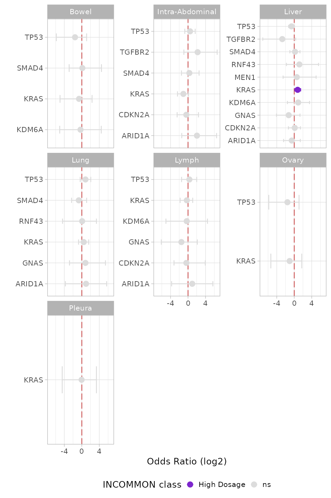

5. Analysis of metastatic patterns of MSK-MetTropism
Source:vignettes/a5_metastasis_analysis.Rmd
a5_metastasis_analysis.Rmd
library(dplyr)
#>
#> Attaching package: 'dplyr'
#> The following objects are masked from 'package:stats':
#>
#> filter, lag
#> The following objects are masked from 'package:base':
#>
#> intersect, setdiff, setequal, union
library(INCOMMON)
#> Warning: replacing previous import 'cli::num_ansi_colors' by
#> 'crayon::num_ansi_colors' when loading 'INCOMMON'
library(cli)In this vignette we carry out survival analysis based on INCOMMON classification of samples of pancreatic cancer (PAAD) patients of the MSK-MetTropsim cohort.
5.2 Metastatic propensity of PAAD samples
5.2.1 Metastatic propensity of fully incactivated TP53
We can analyse the metastatic propensity of primary breast tumor
genomes containing TP53 mutations by using function
met_propensity. This function implements a logistic
regression to fit the Binomial probability of developing metastasis
based on the interpreted mutant genome, with the mutant gene without CNA
(here, Mutant TP53 without LOH) as reference.
data("MSK_PAAD_output")
MSK_PAAD_output = met_propensity(x = MSK_PAAD_output, tumor_type = 'PAAD', gene = 'CDKN2A')
#> Joining with `by = join_by(id)`
#> Waiting for profiling to be done...
#> Waiting for profiling to be done...
#> # A tibble: 1 × 6
#> gene class OR low up p.value
#> <chr> <chr> <dbl> <dbl> <dbl> <dbl>
#> 1 CDKN2A High Dosage 3.46 1.21 9.24 0.0153From this analysis it emerges that high dosage CDKN2A have more than a three-fold increase in risk to metastatise (OR = 3.46, p.value = 0.015) with respect to mutant samples a balanced mutant dosage.
5.2.2 Metastatic propensity for the top mutant genes in BRCA
We extend this analysis to multiple genes, focusing on the 10 most frequently mutated ones.
top_genes = MSK_PAAD_output$input %>%
dplyr::group_by(gene) %>%
dplyr::reframe(N = length(unique(sample))) %>%
dplyr::arrange(dplyr::desc(N)) %>%
dplyr::slice_head(n = 10) %>%
pull(gene)
print(top_genes)
for(g in top_genes){
MSK_PAAD_output = met_propensity(x = MSK_PAAD_output, tumor_type = 'PAAD', gene = g)
}5.2.2 Visualising metastatic propensity odds ratio
INCOMMON provides the function plot_met_volcano to
visualise metastatic propensity odds ratios in a volcano plot.
plot_met_volcano(x = MSK_PAAD_output, tumor_type = 'PAAD')In addition to CDKN2A, among the 10 most frequently mutant genes in PAAD, a high dosage of KRAS seems to reduce the risk of metastatisation (OR = 0.59, p.value = 0.04). Given the strong worsening of survival outcomes related to high KRAS dosage in PAAD, this effect may be explained by the fact that the death rate in this configuration is high enough not to allow the annotation of metastases in the patients’ electronic health records.
5.3 Metastatic tropism of BRCA samples
5.3.1 Tropism to liver metastases of KRAS pancreatic cancer with high dosage
We can analyse the organotropism of metastatic pancreatic tumor
genomes containing KRAS mutations by using function
met_tropsim. Similarly to the metastatic propensity
analysis, this function implements a logistic regression to fit the
Binomial probability of developing metastasis towards a specific
metastatic site (here the Liver, as example), based on the mutant gene
dosage, with the balanced dosage as reference.
MSK_PAAD_output = met_tropism(MSK_PAAD_output, tumor_type = 'PAAD', gene = 'KRAS', metastatic_site = 'Liver')
#> Waiting for profiling to be done...
#> Waiting for profiling to be done...
#> # A tibble: 1 × 7
#> gene metastatic_site class OR low up p.value
#> <chr> <chr> <chr> <dbl> <dbl> <dbl> <dbl>
#> 1 KRAS Liver High Dosage 1.72 1.09 2.77 0.0232There is odds ratio (OR) of metastatising to the Liver for high dosage KRAS mutant pancreatic cancer is almost two-fold (OR = 1.71, p.value = 0.023) with respect to mutant samples with balanced dosage.
5.3.2 Tropism of top mutant genes in PAAD to the Liver
We extend this analysis to multiple genes, focusing on the 10 most frequently mutated ones and the top 10 most frequent metastatic sites.
top_sites = MSK_PAAD_output$clinical_data %>%
dplyr::filter(METASTATIC_SITE != 'Unspecified') %>%
dplyr::group_by(METASTATIC_SITE) %>%
dplyr::reframe(N = length(unique(sample))) %>%
dplyr::arrange(dplyr::desc(N)) %>%
dplyr::slice_head(n = 10) %>%
pull(METASTATIC_SITE)
for(g in top_genes[1:10]){
for(m in top_sites){
MSK_PAAD_output = met_tropism(MSK_PAAD_output, gene = g, tumor_type = 'PAAD', metastatic_site = m)
}
}5.3.3 Visualising metastatic tropism
INCOMMON provides the function plot_tropism to visualise
metastatic tropism odds ratios by metastatic site.
plot_tropism(x = MSK_PAAD_output, tumor_type = 'PAAD')
Interestingly, a high dosage of KRAS only increases the odds of metastatisation to the liver, among the first 10 most frequent metastatisation sites, highlighting a very specific organotropic pattern for this mutant dosage configuration.